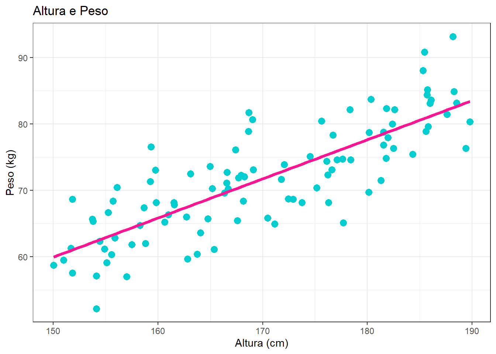

11 Regressão linear (incompleto)
A regressão linear modela a relação entre duas variáveis quantitativas, onde uma variável é considerada dependente e a outra é independente. O objetivo principal é estabelecer uma equação linear que descreva como a variável dependente (\(Y\)) se comporta em função da variável independente.
A equação da regressão linear simples é \(Y = a + b X + \varepsilon\).
Onde: - \(Y\) é a variável resposta (dependente) - \(X\) é a variável explicativa (independente) - \(a\) é o intercepto (valor de \(Y\) quando \(X = 0\)) - \(b\) é o coeficiente angular (indica a variação de \(Y\) para cada unidade de \(X\)) - \(\varepsilon\)é um erro aleatório.
Suponha que temos interesse em estudar o valor esperado do peso de uma pessoa (\(Y\), em kg), com base em sua altura (\(X\), em cm). Para isso, coletamos dados de várias pessoas e ajustamos um modelo de regressão linear.
## Warning: Using `size` aesthetic for lines was deprecated in ggplot2 3.4.0.
## ℹ Please use `linewidth` instead.
## This warning is displayed once every 8 hours.
## Call `lifecycle::last_lifecycle_warnings()` to see where this warning was
## generated.## `geom_smooth()` using formula = 'y ~ x'
\(Y\): Variável resposta (dependente) \(X\): Variável explicativa (independente)
Com isso, temos que,
\[ E[Y \mid X = x] = a + bx \]
Agora, para conseguir estimar esse valor esperado do peso de uma pessoa, com base em sua altura, precisamos obter o valor \(a\) e \(b\).
11.1 Estimar \(a\) e \(b\)
Para estimar os coeficientes usamos o método dos mínimos quadrados
\[ S = \sum_{i=1}^{n} e_i^2 = \sum_{i=1}^{n} (y_i - (a + bx_i))^2 = \sum_{i=1}^{n} (y_i - a - bx_i)^2\\ \]
\[ \left\{ \begin{array}{l} \frac{\partial S(a, b)}{\partial a} = 0 \\ \frac{\partial S(a, b)}{\partial b} = 0 \end{array} \right. \Longrightarrow \left\{ \begin{array}{l} \frac{\partial S(a, b)}{\partial a} = - \sum_{i=1}^{n} 2(y_i - a - b x_i) = 0 \\ \frac{\partial S(a, b)}{\partial b} = - \sum_{i=1}^{n} x_i \cdot 2(y_i - a - b x_i) = 0 \end{array} \right. \]
\[ \Longrightarrow - \sum_{i=1}^{n} y_i + n a + b \sum_{i=1}^{n} x_i = 0 \Longrightarrow a = \frac{\sum_{i=1}^{n} y_i}{n} - b \frac{\sum_{i=1}^{n} x_i}{n} \] \[ \Longrightarrow a = \bar{y} - b\bar{x} \]